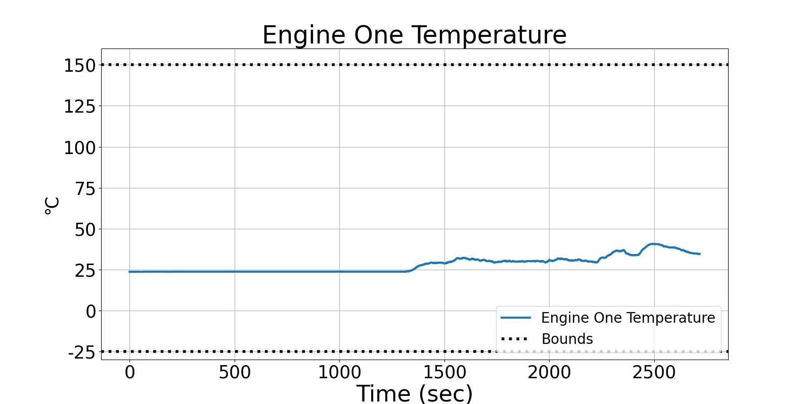
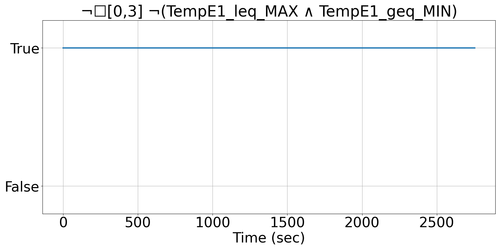
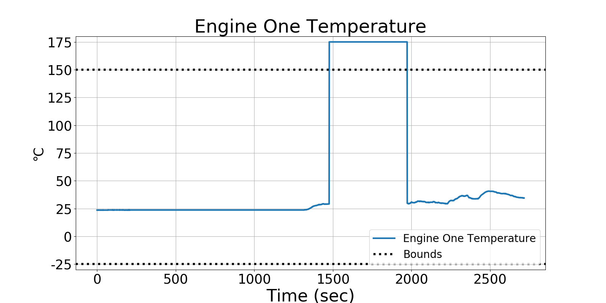
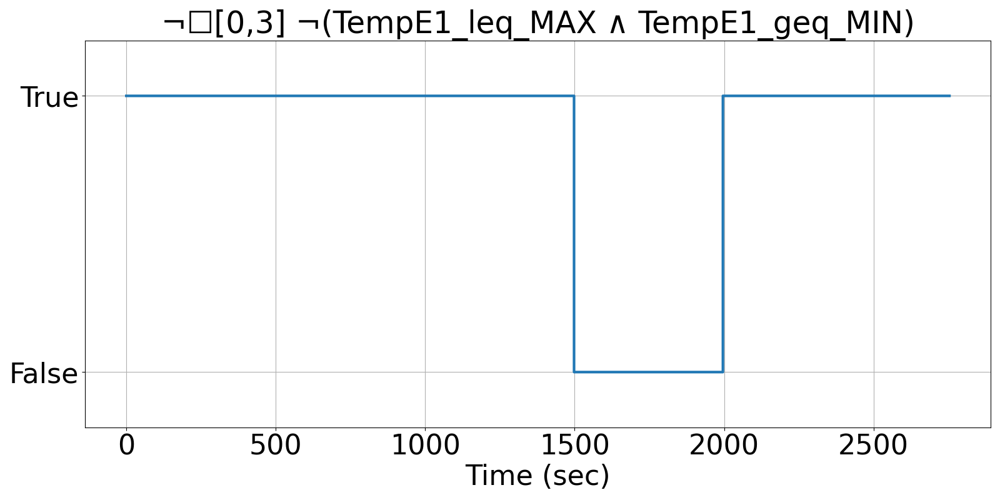

Integrating Runtime Verification into an
Automated UAS Traffic Management System
Matthew Cauwels, Abigail Hammer, Benjamin Hertz, Phillip H. Jones, Kristin Y. Rozier
This webpage contains supplementary specifications for "Integrating Runtime Verification into an
Automated UAS Traffic Management System" by M. Cauwels, A. Hammer, B. Hertz, P. H. Jones, and K. Y. Rozier
OR_UAS_7
Specification Description
The TempE1 of the UAS will be bounded between TEMPE1_OR_MIN and TEMPE1_OR_MAX, but if it is not, allow 3 timesteps to recover.
Signals Required
TempE1
Boolean Conversion of Signals to Atomic Inputs
TempE1_leq_MAX: Temp ≤ TempE1_OR_MAX
TempE1_geq_MIN: Temp ≥ TempE1_OR_MINMLTL Specificaiton
¬☐[0,3] ¬(TempE1_leq_MIN ∧ TempE1_geq_MIN)
Fault Explanation
Engine One temperature is exceeding flight bounds
Additional Notes
TempE1_OR_MIN and TempE1_OR_MAX based on acceptable flight conditions (primarily dependent on battery operating conditions)
Figure



